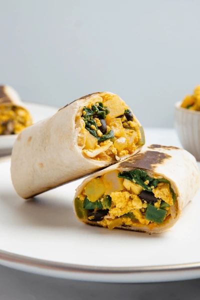

Breakfast Burrito
Savor a delightful breakfast with our scrumptious burritos
—fluffy eggs, seasoned sausage, melted cheese,
and fresh veggies rolled into a warm tortilla for a
delicious start to your day!
 4 out of 5 Stars
4 out of 5 Stars

Prep Time
Cook Time
Total Time
25 min
15 min
40 min
Ingredients
- 2 large eggs
- 1/4 cup diced bell peppers (any color)
- 1/4 cup diced onion
- 1/4 cup cooked and crumbled sausage
- 1/4 cup shredded cheese (cheddar, Monterey Jack, or your choice)
- 1 medium-sized flour tortilla
- Salt and pepper to taste
- Salsa, sour cream, or guacamole for serving (optional)
Instructions
- In a skillet over medium heat, cook and crumble the sausage until browned and cooked through.
- In a separate bowl, whisk the eggs and season with salt and pepper.
- Push the sausage to one side of the skillet and pour the whisked eggs into the other side.
- Scramble the eggs until fully cooked and combine them with the cooked sausage.
- Warm the tortillas in the skillet or microwave.
- Spoon the egg and sausage mixture onto the center of each tortilla.
- Optional: Add shredded cheese on top of the egg and sausage mixture.
- Roll each tortilla into a burrito, folding in the sides as you go.
- Serve immediately and enjoy your hearty Breakfast Burrito!
1 Comment